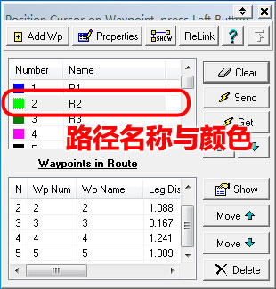

|
| 首页 | GeoTIFF | 今日花园Maps | OruxMaps | OZI | 资源 | 软件 | 联系 |
| 当前位置：OZI ---> OziExplorer路径文件的制作 |
OziExplorer路径文件的制作OziExplorer导航软件加载路径文件后，可以在地图上显示路径信息。如下图所示： |
|
由于OZI的路径就是把一系列航点连接起来，所以路径文件必须以航点文件为基础。要在OZI地图上显示路径，必须先加载相应的航点文件，再加载相应的路径文件。 OZI路径文件的制作必须在PC电脑版的OziExplorer软件上进行，路径文件的后缀是.rte。制作步骤如下： 1）制作相应的航点文件，下图中航点1、2、3、4、5就是我们制作路径要用到的航点。航点标注完后不要忘记保存航点文件。如下图所示： |
|
2）按下工具栏上的编辑路径按钮，弹出路径编辑窗。如下图所示： |
|
一个路径文件可以包括多条路径，路径的名称为R1、R2、R3...等等。不同的路径颜色不同。如下图所示： |

|
3）在路径编辑窗中选择好路径名称，然后按下“Properties(属性)”按钮，弹出路径属性窗。如下图所示： |
|
4）在路径属性窗中，从左边已经存在的航点框中，选择路径用到的航点并添加到右边框中。路径的航点是有顺序的，可以通过右下角的调整按钮调整航点的顺序。每条路径最多只能包括60个航点。添加并调整好航点后，点击下面的“OK”按钮，关闭路径属性窗。如下图所示： |
|
5）在路径编辑窗中按下“show(显示)”按钮，OZI地图上就会显示路径。点击路径编辑窗右上角的“X”按钮，关闭路径编辑窗。如下图所示： |
|
6）点击工具栏上的Save按钮，选择“Save Routes to File”项，如下图所示： |
|
7）在弹出的保存对话窗中输入路径文件名称，点击“保存”按钮，就会生成一个后缀为.rte的路径文件，如下图所示： |
|
把航点文件和路径文件复制到导航仪SD卡上OZI程序目录下的Date目录中。在导航仪上的OZI程序运行后，可以通过菜单选项将文件加载并显示。下图就是加载了路径后的导航效果： |
| www.todaygarden.net |
版权所有 2010-2020 今日花园 |